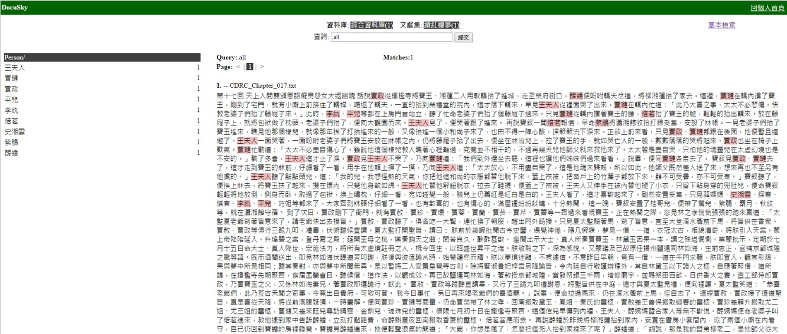

如何利用MARCUS標記文件中的姓名、地名、官名與時間。
1.此處以Docusky提供之續紅樓夢 CDRC_Chapter_017.txt 作為範例文本
2.確認欲上傳之txt文檔為UTF-8格式
3.上傳成功後，選擇「二B：手動標記」
進入標記頁面後，左側為全文，右側為標記工作區，可切換多種標記選項。
1.在全文內框出欲標記的人名或地名，會出現標記對話框。
2.將人名「薛蟠」反白後，點「姓名」，再點「存檔」， 「薛蟠」呈現為紅色，標示完成。
文章標示完成後，保存或輸出選「MARCUS存檔」，將marcus.html檔存至電腦。
如何將MARCUS標記後的marcus.html檔轉換為ThdlExportXml格式。
1.選擇欲上傳的marcus.html檔
2.命名文獻集
3.進行轉換
如何將轉換好的ThdlExportXml上傳至Docusky建立資料庫。
建立資料庫必須先登入帳號密碼始能進行。
個人首頁：
可以看見已經建立完成的資料庫列表，也可以新增或刪除資料庫
點選文獻集續紅樓夢(1)，即可瀏覽全文，及先前在MARCUS上標記的詞頻。
